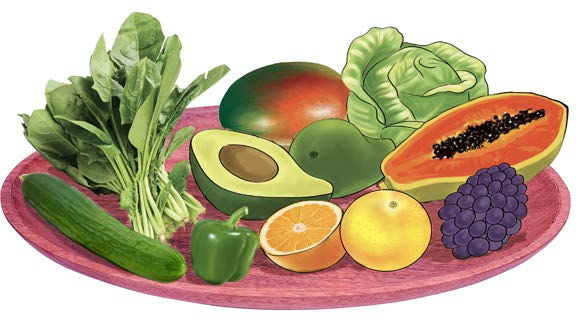

misuli na mifupa ya mwili. Vitamini na madini hupatikana katika mbogamboga kama vile kabichi, sukumawiki, mchicha, biringanya na karoti. Pia, hupatikana katika matunda mfano papai, chungwa, parachichi, zabibu na embe. Kielelezo namba 5 kinaonesha mifano ya vyakula vyenye vitamini na madini.

Kielelezo namba 5: Vyakula vyenye vitamini na madini
Maji
Maji si sehemu ya makundi makuu ya vyakula yanayounda mlo kamili. Hatahivyo, mwili huhitaji maji ya kutosha ili uweze kufanya kazi ipasavyo. Hii ni kwa sababu yana madini mbalimbali yanayosaidia mifumo ya mwili kufanya kazi vizuri. Kwa mfano, umeng’enywaji wa chakula na ufyonzwaji mzuri wa virutubisho kutoka kwenye vyakula. Pia, maji husaidia kuondoa takamwili na sumu mwilini. Vilevile, maji husaidia kurekebisha joto la mwili.